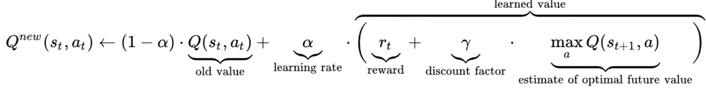
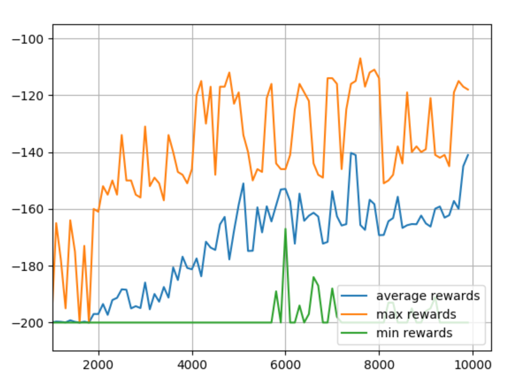
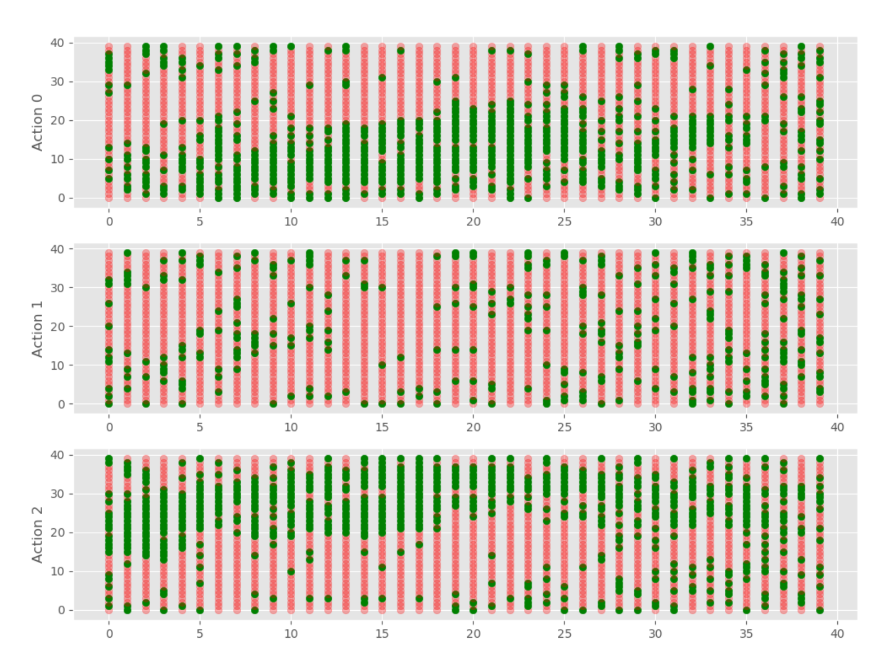

Q-learning
Contents
Q-learning#
!pip install gym
初始化GYM库的配置 - Initial gym environment#
import gym
import numpy as np
env = gym.make("MountainCar-v0")
env.reset()
done = False
Note
该游戏介绍：即操纵小车达到山坡的顶点 Q-learning 策略：用得分点backpropagate到action的Q值，来选择action}
对山地车做简单训练#
while not done:
action = 2
## 每个环节都有三个参数， 状态， 奖励， 目标完成与否
new_state, reward, done, _ = env.step(action)
env.render()
env.close()
Tip
Q learning formulae
we just pick up those with highest Q-value
Warning
单说做循环，问题在什么地方？ -> 由于每个动作的角度的state是continuous的，在这个问题中。Q-table可能会特别大，因此需要对Q-table做一个精简处理 （Discrete）
对山地车state/ 动作的阈值做一个提取#
## 获取所有动作中高点可能的值
print(env.observation_space.high)
## 获取所有动作中底部可能的值
print(env.observation_space.low)
## 获取动作个数 how many actions are possible
print(env.action_space.n)
离散化 - 首先对于动作高点的范畴，我们将其变成20个模块 20 chunks#
** 这个 20 是自己定义的 **
# 建立一个个数为观测数的20的list
discrete_size = [20] * len(env.observation_space.high)
# 获取每段的长度
discrete_win_size = (env.observation_space.high - env.observation_space.low) / discrete_size
# 计算state属于哪一个bucket
def get_discrete_state(state):
discrete_state = (state-env.observation_space.low) / discrete_win_size
return tuple(discrete_state.astype(np.int))
建立一个20*20 的q-table来储存state action对#
该表是三维的
## -2 和 0 靠直觉 和 经验 定义。。。
q_table = np.random.uniform(low=-2, high=0, size=(discrete_size+[env.action_space.n]))
建立Q-leanring必需的参数#
## 学习率 0-1
learning_rate = 0.1
# 用于折扣未来奖励对于现在步数的影响 how important is future reward
discount = 0.95
# episodes, 训练周期多少轮
episodes= 4000
构造一次训练#
## 按照离散的进行训练
discrete_state = get_discrete_state(env.reset())
done=False
while not done:
# 获取q表中，每个获得的离散状态下，返回q值最高的动作
action = np.argmax(q_table[discrete_state])
# 做了这个工作之后进入下一个state
new_state, reward, done, _ = env.step(action)
# 下一个state的离散形态
new_discrete_state = get_discrete_state(new_state)
env.render()
# 如果没有做了该动作后没有达到target，那么下面使用Q-learning公式，根据公式我们知道，需要 1.旧Q值 2.学习率 3.奖励 4.折现率 5.对于未来估计的最大Q值
if not done:
# 我们先计算1和5
## 做完动作后的Q值
current_Q = q_table[discrete_state + (action, )]
## 在做完动作后的该状态下，未来最大的Q值
max_future_Q = np.max(q_table[new_discrete_state])
# 根据公式计算出新的Q值
new_Q = (1-learning_rate) * current_Q + learning_rate * (reward + discount * max_future_Q)
# 用新获得的Q值来更新Q表， key-value键值对，key是做完动作后的状态
q_table[discrete_state+(action, )] = new_Q
# 如果达到目标了，那么
elif new_state[0] >= env.goal_position:
# 在这次训练中，reward被设置为0，当达到目标时。。无惩罚项
q_table[discrete_state+(action,)] = 0
# 更新状态到下一状态
discrete_state = new_discrete_state
env.close()
批次训练#
for episode in range(episodes):
if episode % 2000 == 0:
# 每2000轮，把这个小车加载出来看下
render=True
# 同时打印目前多少轮了
else:
render=False
discrete_state = get_discrete_state(env.reset())
done=False
while not done:
action = np.argmax(q_table[discrete_state])
new_state, reward, done, _ = env.step(action)
new_discrete_state = get_discrete_state(new_state)
if render:
env.render()
if not done:
current_Q = q_table[discrete_state + (action, )]
max_future_Q = np.max(q_table[new_discrete_state])
new_Q = (1-learning_rate) * current_Q + learning_rate * (reward + discount * max_future_Q)
q_table[discrete_state+(action, )] = new_Q
elif new_state[0] >= env.goal_position:
# 当达到目的时，终止
print(f"we made that in {episode}")
q_table[discrete_state+(action,)] = 0
discrete_state = new_discrete_state
env.close()
结果：
Tip
Epsilon 在以上的训练中我们没有设置epsilon，这是一个随机值。用于balance exploration和exploitation
exploitation就是当找到一条正确道路的时候，继续往下走
exploration就是寻找其他随机道路，看是否能达到终点
如果要加入Epsilon，那么
epsilon = 0.5
start_epsilon_decay=1
end_epsilon_decay=episodes//2
epsilon_decay_value=epsilon/(end_epsilon_decay-start_epsilon_decay)
并在while not done同列的最后添加
if end_epsilon_decay >= episode >= start_epsilon_decay:
epsilon -= epsilon_decay_value
小结 - 我们刚刚的训练只能保证达到target，但不能保证使用完美的策略最有效地达到target#
Note
对于这个简单的项目来说，我们使用的Q-learning完全够了，但是对于复杂的环境，远远不止如此简单。下面我们开始进行Q-learning的高级一点的操作，比如可视化tracking。
import gym
import numpy as np
env = gym.make("MountainCar-v0")
LEARNING_RATE = 0.1
DISCOUNT = 0.95
EPISODES = 4000
SHOW_EVERY = 20
DISCRETE_OS_SIZE = [20] * len(env.observation_space.high)
discrete_os_win_size = (env.observation_space.high - env.observation_space.low)/DISCRETE_OS_SIZE
# Exploration settings
epsilon = 1
START_EPSILON_DECAYING = 1
END_EPSILON_DECAYING = EPISODES//2
epsilon_decay_value = epsilon/(END_EPSILON_DECAYING - START_EPSILON_DECAYING)
q_table = np.random.uniform(low=-2, high=0, size=(DISCRETE_OS_SIZE + [env.action_space.n]))
# 可视化代码片段插入1
ep_rewards = []
## 用于统计在当前episode，reward的情况（if better, how better; if worse, how worse the model is）
aggr_ep_rewards = {'ep': [], 'avg': [], 'max': [], 'min': []}
def get_discrete_state(state):
discrete_state = (state - env.observation_space.low)/discrete_os_win_size
return tuple(discrete_state.astype(np.int)) # we use this tuple to look up the 3 Q values for the available actions in the q-table
for episode in range(EPISODES):
# 可视化代码片段插入2, 定义单个episode的reward
ep_reward = 0
discrete_state = get_discrete_state(env.reset())
done = False
if episode % SHOW_EVERY == 0:
render = True
print(episode)
else:
render = False
while not done:
if np.random.random() > epsilon:
# Get action from Q table
action = np.argmax(q_table[discrete_state])
else:
# Get random action
action = np.random.randint(0, env.action_space.n)
new_state, reward, done, _ = env.step(action)
# 可视化代码片段插入3， 当获得reward时加入
ep_reward += reward
new_discrete_state = get_discrete_state(new_state)
if episode % SHOW_EVERY == 0:
env.render()
#new_q = (1 - LEARNING_RATE) * current_q + LEARNING_RATE * (reward + DISCOUNT * max_future_q)
# If simulation did not end yet after last step - update Q table
if not done:
# Maximum possible Q value in next step (for new state)
max_future_q = np.max(q_table[new_discrete_state])
# Current Q value (for current state and performed action)
current_q = q_table[discrete_state + (action,)]
# And here's our equation for a new Q value for current state and action
new_q = (1 - LEARNING_RATE) * current_q + LEARNING_RATE * (reward + DISCOUNT * max_future_q)
# Update Q table with new Q value
q_table[discrete_state + (action,)] = new_q
# Simulation ended (for any reson) - if goal position is achived - update Q value with reward directly
elif new_state[0] >= env.goal_position:
#q_table[discrete_state + (action,)] = reward
q_table[discrete_state + (action,)] = 0
discrete_state = new_discrete_state
# Decaying is being done every episode if episode number is within decaying range
if END_EPSILON_DECAYING >= episode >= START_EPSILON_DECAYING:
epsilon -= epsilon_decay_value
# 可视化代码片段插入4, 循环最外层的ep reward加上
ep_rewards.append(ep_reward)
# 可视化代码片段插入5, 更新agg_reward
if not episode % SHOW_EVERY:
average_reward = sum(ep_rewards[-SHOW_EVERY:])/SHOW_EVERY
aggr_ep_rewards['ep'].append(episode)
aggr_ep_rewards['avg'].append(average_reward)
aggr_ep_rewards['max'].append(max(ep_rewards[-SHOW_EVERY:]))
aggr_ep_rewards['min'].append(min(ep_rewards[-SHOW_EVERY:]))
print(f'Episode: {episode:>5d}, average reward: {average_reward:>4.1f}, current epsilon: {epsilon:>1.2f}')
env.close()
import matplotlib.pyplot as plt
plt.plot(aggr_ep_rewards['ep'], aggr_ep_rewards['avg'], label="average rewards")
plt.plot(aggr_ep_rewards['ep'], aggr_ep_rewards['max'], label="max rewards")
plt.plot(aggr_ep_rewards['ep'], aggr_ep_rewards['min'], label="min rewards")
# 图标的位置，lower right 右下角
plt.legend(loc=4)
plt.show()
Tip
对于想要保存Q table的，以下是方法
for episode in range(EPISODES):
...
# AT THE END
np.save(f"qtables/{episode}-qtable.npy", q_table)
env.close()
Warning
当然要慎用以上代码，因为可能会保存很多很多个 最好限制一下 -》
if episode % 10 == 0:
np.save(f"qtables/{episode}-qtable.npy", q_table)
《-
可视化一个Q-table#
from mpl_toolkits.mplot3d import axes3d
import matplotlib.pyplot as plt
from matplotlib import style
import numpy as np
style.use('ggplot')
def get_q_color(value, vals):
if value == max(vals):
return "green", 1.0
else:
return "red", 0.3
fig = plt.figure(figsize=(12, 9))
ax1 = fig.add_subplot(311)
ax2 = fig.add_subplot(312)
ax3 = fig.add_subplot(313)
i = 24999
q_table = np.load(f"qtables/{i}-qtable.npy")
for x, x_vals in enumerate(q_table):
for y, y_vals in enumerate(x_vals):
ax1.scatter(x, y, c=get_q_color(y_vals[0], y_vals)[0], marker="o", alpha=get_q_color(y_vals[0], y_vals)[1])
ax2.scatter(x, y, c=get_q_color(y_vals[1], y_vals)[0], marker="o", alpha=get_q_color(y_vals[1], y_vals)[1])
ax3.scatter(x, y, c=get_q_color(y_vals[2], y_vals)[0], marker="o", alpha=get_q_color(y_vals[2], y_vals)[1])
ax1.set_ylabel("Action 0")
ax2.set_ylabel("Action 1")
ax3.set_ylabel("Action 2")
plt.show()
结果：
可视化全周期Q-table#
from mpl_toolkits.mplot3d import axes3d
import matplotlib.pyplot as plt
from matplotlib import style
import numpy as np
style.use('ggplot')
def get_q_color(value, vals):
if value == max(vals):
return "green", 1.0
else:
return "red", 0.3
fig = plt.figure(figsize=(12, 9))
for i in range(0, 25000, 10):
print(i)
ax1 = fig.add_subplot(311)
ax2 = fig.add_subplot(312)
ax3 = fig.add_subplot(313)
q_table = np.load(f"qtables/{i}-qtable.npy")
for x, x_vals in enumerate(q_table):
for y, y_vals in enumerate(x_vals):
ax1.scatter(x, y, c=get_q_color(y_vals[0], y_vals)[0], marker="o", alpha=get_q_color(y_vals[0], y_vals)[1])
ax2.scatter(x, y, c=get_q_color(y_vals[1], y_vals)[0], marker="o", alpha=get_q_color(y_vals[1], y_vals)[1])
ax3.scatter(x, y, c=get_q_color(y_vals[2], y_vals)[0], marker="o", alpha=get_q_color(y_vals[2], y_vals)[1])
ax1.set_ylabel("Action 0")
ax2.set_ylabel("Action 1")
ax3.set_ylabel("Action 2")
#plt.show()
plt.savefig(f"qtable_charts/{i}.png")
plt.clf()
并做成视频#
这个离谱的视频。。
import cv2
import os
def make_video():
# windows:
fourcc = cv2.VideoWriter_fourcc(*'XVID')
# Linux:
#fourcc = cv2.VideoWriter_fourcc('M','J','P','G')
out = cv2.VideoWriter('qlearn.avi', fourcc, 60.0, (1200, 900))
for i in range(0, 14000, 10):
img_path = f"qtable_charts/{i}.png"
print(img_path)
frame = cv2.imread(img_path)
out.write(frame)
out.release()
make_video()